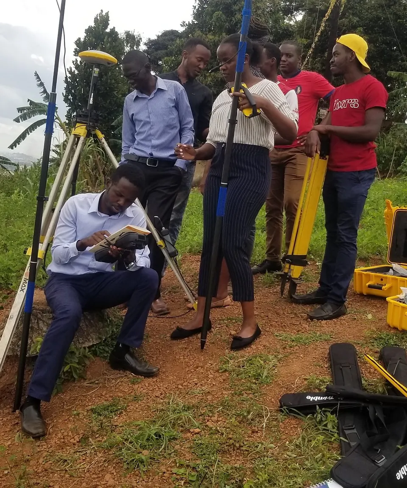
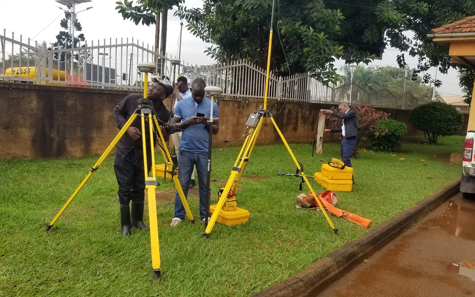
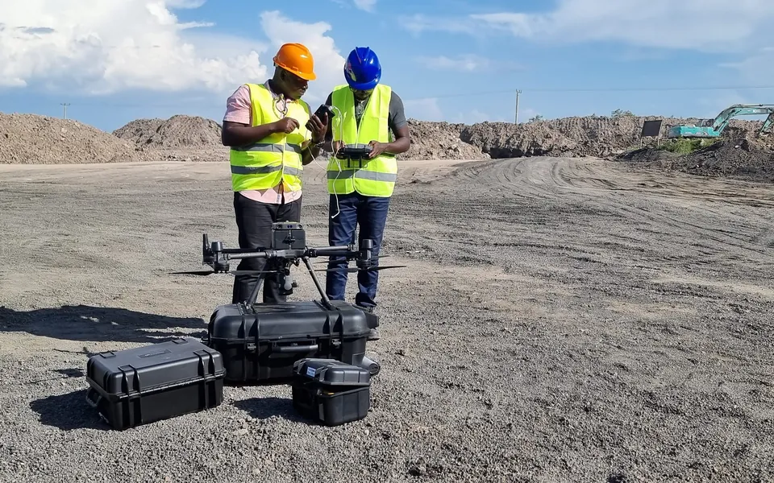
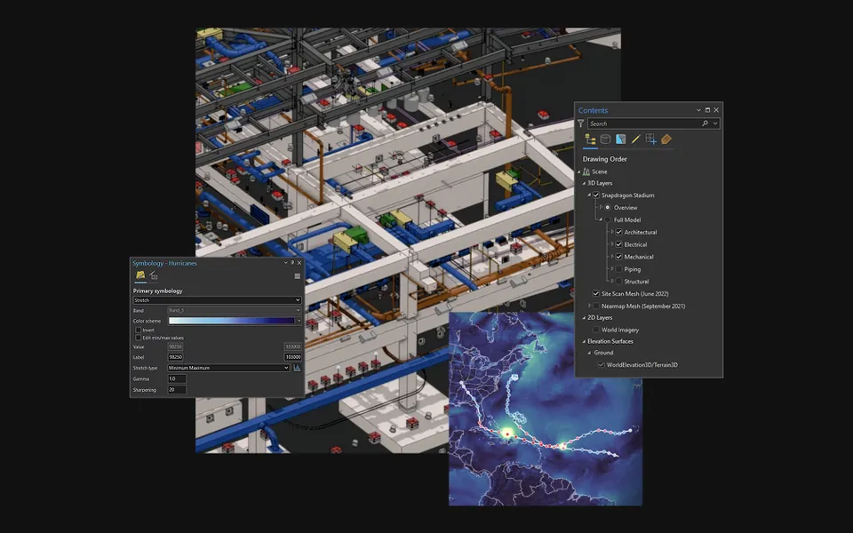
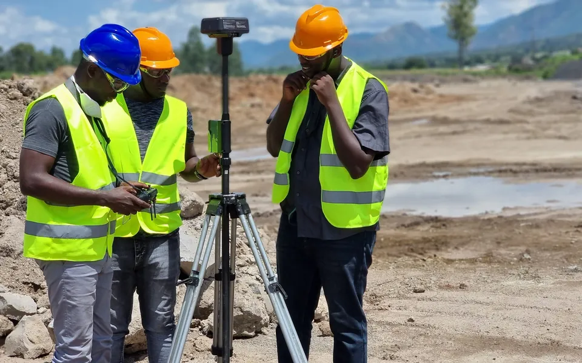
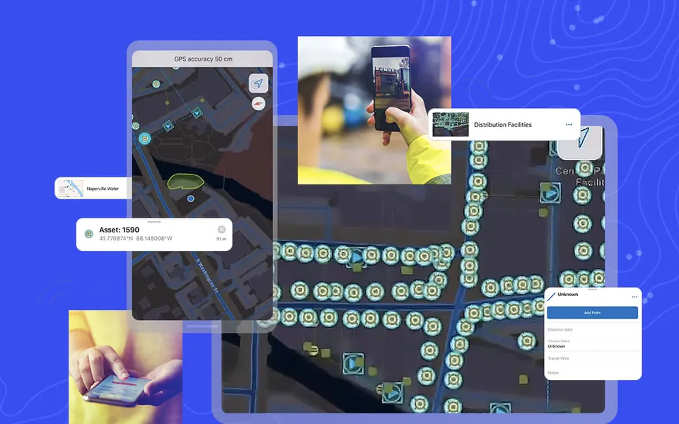
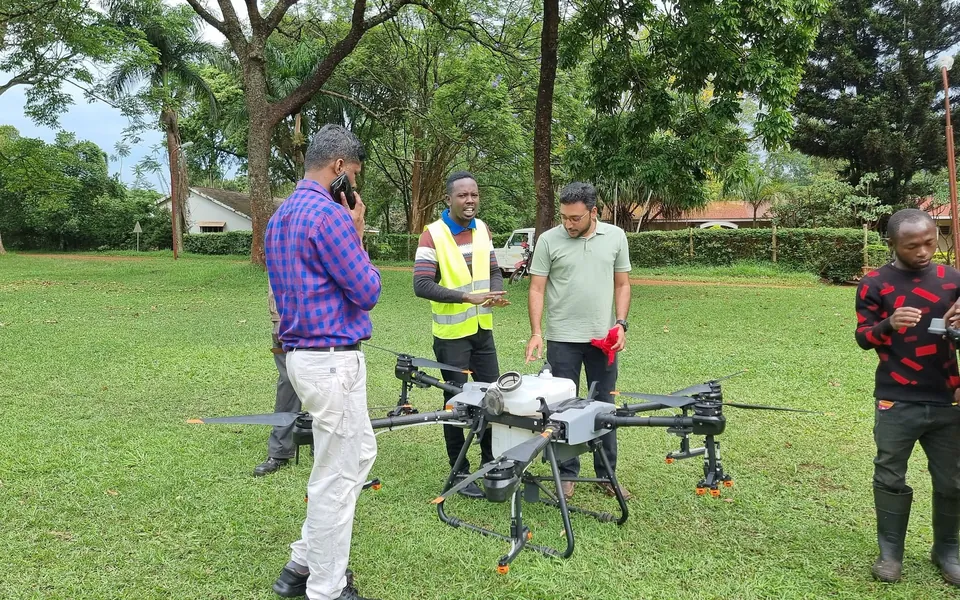

Genuine modern hardware
Train on real Trimble R12i GNSS, S-Series robotic total stations, and DJI Enterprise RTK drones.
 TrimbleGNSS · Total Stations · Scanning
TrimbleGNSS · Total Stations · Scanning DJI EnterpriseDrones · LiDAR · Dock
DJI EnterpriseDrones · LiDAR · Dock Esri ArcGISGIS & SDI
Esri ArcGISGIS & SDI Spectra GeospatialGNSS & Robotic Stations
Spectra GeospatialGNSS & Robotic Stations Nikon PrecisionOptical Survey
Nikon PrecisionOptical Survey US RadarGround Penetrating Radar
US RadarGround Penetrating Radar Seafloor SystemsHydrographic Survey
Seafloor SystemsHydrographic Survey IBM Tape StorageEnterprise Data Archive
IBM Tape StorageEnterprise Data Archive XGRIDSHandheld SLAM LiDAR
XGRIDSHandheld SLAM LiDAR
Equip your surveyors, engineers and GIS analysts with certified, practical competency. Classroom instruction is paired with real field exercises on genuine Trimble, DJI and Esri systems.

Unlike generic theoretical workshops, KACO Academy courses are led by practicing survey engineers and GIS architects who actively execute national-scale geodetic and drone mapping contracts across Uganda.
Train on real Trimble R12i GNSS, S-Series robotic total stations, and DJI Enterprise RTK drones.
Work with local UTM projections, Arc 1960 transformation parameters, and real Ugandan terrain data.
Receive certificates verifying hands-on practical competency upon course completion.
Attend at our Kampala training center, or have us deliver a customized on-site program for your staff. Every course blends classroom instruction with live field practice.
Master modern land survey workflows from static control networks to high-speed RTK stakeout using Trimble R12i receivers, S-Series robotic total stations, and Trimble Access.

From flight planning and airspace compliance to point cloud classification. Learn how to deploy DJI Enterprise drones (Matrice 350, Mavic 3E) to produce survey-grade terrain models.

An exhaustive masterclass in ArcGIS Pro: multi-user geodatabase management, advanced spatial statistics, model builder automation, and spatial data infrastructure architecture.

Connect field survey data directly to engineering civil design. Learn to import raw survey points, create dynamic surfaces, model road corridors, and compute earthwork volumes.

Design and deploy smart offline survey forms with logic, photo attachments, and high-accuracy GPS integration to streamline field data collection across large remote teams.

We build a bespoke curriculum aligned directly with your organization's projects, existing equipment, software licenses, and specific operational challenges.

A simple path for individuals and teams alike.
Tell us who needs training. We send the latest course calendar, syllabus details, and group registration discounts.
Attend at our Kampala training center, or have us deliver on-site at your headquarters or field base camp.
Classroom instruction paired with field exercises on genuine equipment, led by practicing engineers.
Leave with a recognized certificate verifying your hands-on practical competency.
Contact our Academy Coordinator to receive the latest course calendar, syllabus details, group registration discounts, or to schedule a customized on-site training.